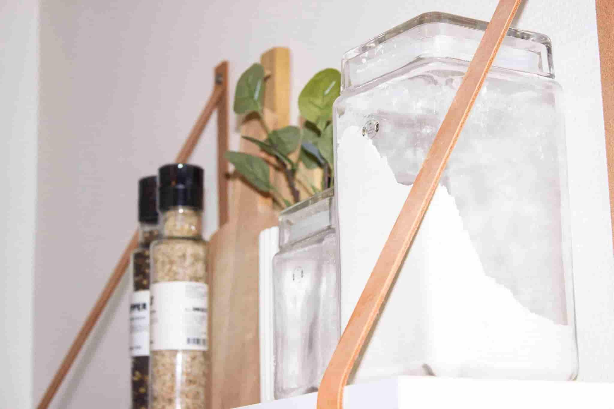

Historie

Hvis du tænker, at du har kendt til mærket Amo længe, så tager du ikke helt fejl. Amo har stået på hylderne i over 80 år.
Det hele startede tilbage i 1928, hvor Dampmøllen Victoria i Odense lancerede Amo-mærket, og selv om det forbindes med omsorgsfuldhed og kærlighed til sine nærmeste, så har navnet faktisk ikke rod i det latinske ord at elske, sådan som mange ellers tror. Navnet opstod nemlig som en forkortelse for Amerikansk Mel i Odense.
Dengang var det amerikanske mel kendt for sin gode kvalitet og gode bageegenskaber, og derfor blev det brugt aktivt i markedsføringen. I dag er der ikke længere amerikansk hvede i Amo-poserne, da der nu dyrkes tilsvarende gode kvaliteter på vores breddegrader.
Amo fik sit helt store gennembrud i 1954, da man begyndte at pakke melet i markante gule poser med opskrifter udenpå. Det var på det tidspunkt en stor nyhed, og takket være de praktiske opskrifter fik "den gule Amo-pose" hurtigt en dominerende rolle på markedet. I 1975 fik Amo-posen et nyt design, som med en række mindre justeringer fortsat er det design, vi kender i dag. Gennem alle årene har den gule farve været bibeholdt.
Den gule pose
Den dag i dag er Amo fortsat et af de førende mærker indenfor hvedemel, hvilket i høj grad skyldes produktets kvalitet. Amo har nemlig altid været det hvedemel, som har kunnet hjælpe hjemmebagere med at sikre det gode bageresultat. Men samtidig har Amo også forstået at følge med tiden, så vi hele tiden har kunnet leve op til de nye krav og ønsker, som hjemmebagere har fået. Efter at hvedemel i årtier havde været det eneste produkt, blev der lanceret andre meltyper som grovmel, rugmel og grahamsmel samt kerner. Dengang bagte mange deres daglige brød selv, da det ikke var muligt hver dag at købe et bredt udvalg af frisk brød i dagligvarebutikkerne. Men faktisk var det meget besværligt at lave f.eks. friskbagt rugbrød fra bunden, for surdejen skulle først stilles til syrning i 3-4 dage, hvilket var en meget langsommelig proces.
På forkant med udviklingen
I takt med, at andre aktiviteter også lagde beslag på tiden i hjemmet, var det færre og færre familier, som bagte deres brød selv. Men det ændrede sig, da Amo i 1991 lancerede sin første bageblanding – Amo Solsikkerugbrød – der samtidig var den første af sin slags på markedet. Det siger næsten sig selv, at familien Danmark tog vel imod denne nyhed, for nu var det både nemt at lave rugbrødet selv, og så smagte det lige så godt, som hvis man selv havde bagt det hele fra grunden efter den gamle opskrift.
Dette har været kendetegnende for alle de mange Amo bageblandinger, som siden er kommet til. Det færdige bageresultat skal være helt på højde med det, man selv kan lave – ellers kan produktet ikke leve op til de forventninger, som hjemmebagerne har til Amo-varemærket.
Nogle år efter den første rugbrødsblanding kom så de første lyse brødblandinger – Amo Yoghurtbrød og Amo 4-Korns Brød. Amo har løbende tilpasset sig danskernes nye madvaner, og lanceret nye brødblandinger.
Det er ikke kun indenfor rugbrødsblandinger, at Amo har været foregangsmand for at gøre det nemt for de danske hjemmebagere. I 1995 var man også først med at tilbyde lette og velsmagende kageblandinger, da man lancerede Amo Chokoladekage, der år efter år har været den mest solgte kageblanding i Danmark.
Amo var virkelig drivkraften bag udviklingen af nemme hjemmebagte kager, der i sidste halvdel af halvfemserne blev markedsført under slogans som Duften af hjemmebag og Det tager kun 10 minutter. I 2001 viste Amo atter vejen på kagemarkedet, da man lancerede Amo Drømmekage, som var lavet på baggrund af én gammel opskrift fra 1960, som én af Amos bagekonsulenter havde modtaget fra en husmoder fra Brovst. Men at det var nemt at bage Amo Drømmekage og de andre kager, var ingen danskere i tvivl om, da det i en række TV-spots lykkedes to bikere at bage en kage til deres kammerat på sygehuset.
I det nye årtusinde var det endnu engang Amo, som var først til at opfylde de krav, som forbrugerne efterspurgte, da man i 2003 lancerede en serie Amo 9 %-kager. Bageblandingen havde mindre end 9 % fedt, mens den færdige kage aldrig kom over de maximale 30 for fedt/energi-procenten, som er blevet en god rettesnor for at spise rigtigt. Som det seneste nye har Amo i sommeren 2010 fået bageblandinger til koldthævede boller i sortimentet.
Ny rød profil
Med sit store udbud af dels kageblandinger, dels lyse- og mørke brødblandinger er Amos sortiment meget bredt, og derfor var der efterhånden opstået et stort behov for at samle hele sortimentet i en sammenhørende designprofil. Det skete i 2004, hvor alle bageblandingerne fik en ny rød profil, hvor det velkendte Amo i samme omgang blev frisket op.
Men den gule Amo-pose er stadig den samme. Det er nemlig det gode hvedemel, som er med til at sikre det gode bageresultat i alle Amos produkter.
Inspiration til hjemmebag
Amo er også kendt for i årtier at have inspireret til hjemmebagning med opskrifter på kager og brød.
Mange af disse er i dag klassikere, som bages igen og igen.
I anledning af Amos 80 års jubilæum udgav vi i 2008 Den Store Fødselsdags Bagebog. I bogen er en række af de mest kendte opskrifter fra tidligere samlet, ligesom den indeholder nye opskrifter, serveringsforslag og pyntetips. Fødselsdagsbagebogen opnåede en utrolig stor popularitet og er blevet solgt i mere end 250.000 eksemplarer. I de følgende år blev succesen fulgt op med Den Store Bagebog 2 og Den Store Bagebog 3.
Kontakt Oplysninger
Amo er ejet af Lantmännen Cerealia A/S, derfor skal du kontakte enten:
Forbrugertelefon (+45 80 25 34 06).
Lantmänn Cerealia A/S Møllegade 12
7100 Vejle - Danmark
Tlf: (+45) 79 415 415
Du kan også kontakte via Facebook.